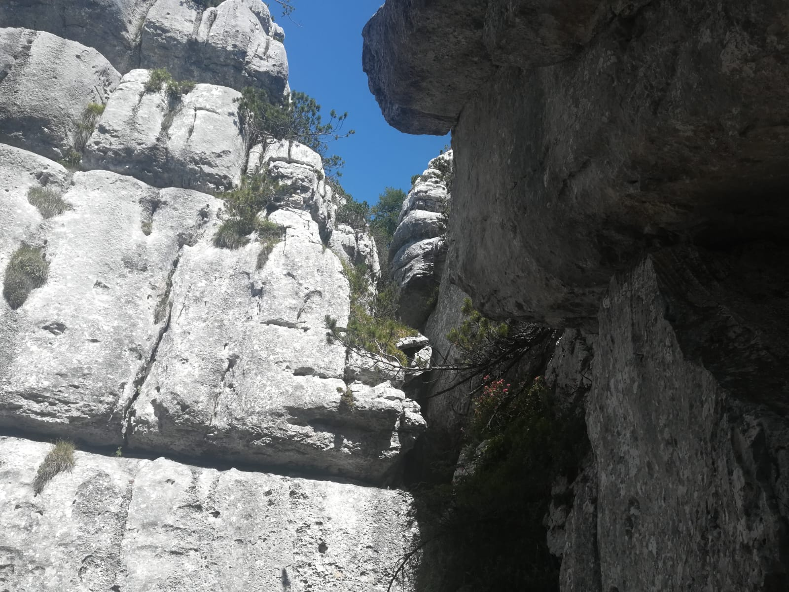

Castelloni di San Marco
Introduzione
L'escursione e' semplice ma molto spettacolare
Dettagli

Partiamo da Piazzale Lozze. Prima tappa cima Caldiera, dove si puo' godere di una bellissima vista sulla Valsugana.
Scendiamo poi dalla stessa strada e proseguiamo il nostro cammino verso la meta attraverso il sentiero X.
Il sentiero e' per gran parte pianeggiante e velocemente arriviamo a porta Molina. Da qui si offre di nuovo una bella vista sulla Valsugana. Ci fermiamo per mangiare il pranzo al sacco.
Riprendiamo verso la meta di giornata, che raggiungiamo in poco tempo.
I Castelloni di San Marco sono dei cosi naturali numerati da 1 a Y, ma possono essere visitati in qualunque ordine.
Terminato la visita, non ci resta che tornare al punto di partenza per il sentiero dell'andata. Tagliamo solamente un pezzo ad un bivio.